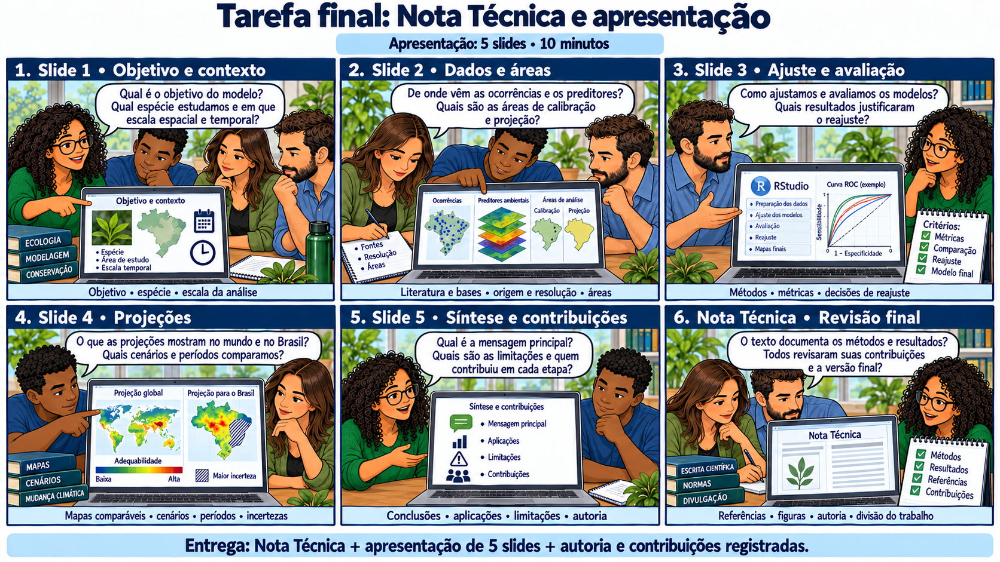

CAPÍTULO 16 · Comunicação · síntese do ODMAP
Da reunião de resultados ao artigo
Escrever é organizar a relação entre pergunta, método, evidência e alcance.
Base no curso: slides 418–434; 437–442.
A equipe volta à primeira pergunta. Agora tem um caderno de decisões, diagnósticos e uma lista de limites. Uma pesquisadora abre o artigo: “Vamos escrever o que os dados sustentam e deixar identificável o que ainda precisa ser feito.”

Uma estrutura IMReD
| Seção | O que a equipe precisa entregar |
|---|---|
| Introdução | Problema, lacuna, objetivo e hipóteses testáveis. Evitar transformar toda a revisão de literatura em justificativa genérica. |
| Métodos | Dados e suas fontes, qualidade, domínio, preditores, partições, algoritmos, seleção, avaliação e projeções. ODMAP apoia essa descrição. |
| Resultados | Quantidades e saídas verificadas: registros, partições, modelos, métricas, curvas, mapas e sensibilidade. |
| Discussão | O que as evidências significam, explicações alternativas, comparação com literatura e limites da aplicação. |
O resumo deve ser escrito após conferir o estudo completo. Título e conclusão precisam corresponder ao objetivo de fato analisado. Na seção de métodos, descreva o particionamento e os critérios de seleção empregados. Para o futuro, apresente a adequabilidade potencial de acordo com os cenários e a hipótese de dispersão adotada.
Cada figura deve responder a uma pergunta
Uma figura de ocorrências documenta cobertura e domínio. Uma figura de avaliação mostra erros e variação entre partições. Um mapa contínuo apresenta o padrão estimado. Um mapa futuro precisa trazer cenário, período e uma indicação das condições de aplicação. Legendas devem informar fonte, variável, unidades, escala e significado de NA quando relevante.
Preserve um sistema de coordenadas apropriado e uma projeção adequada ao que se compara. Cálculos de área não devem usar diretamente o número de pixels em graus como se todas as células tivessem área igual. Compare valores com geometria e unidades verificadas. Uma escolha cartográfica pode mudar a percepção, mesmo quando os dados não mudam.
O pacote que acompanha o manuscrito
- Dados compartilháveis e referências dos dados que não podem ser redistribuídos.
- Scripts, parâmetros, versões e instruções de execução.
- Tabelas por partição, critérios de seleção e registro de exclusões.
- Protocolo ODMAP preenchido e figuras com legendas completas.
- Contribuições dos autores, fontes de financiamento e disponibilidade de dados conforme o periódico.
# No projeto de modelagem, depois de conferir as saídas:
writeLines(capture.output(sessionInfo()), "session-info.txt")
# Arquive também as configurações, dados e relatórios da execução.A última reunião
O grupo prepara cinco slides: pergunta; dados e métodos; avaliação; projeções e incertezas; conclusão e próximos passos. Em cada um, uma afirmação principal deve apontar para sua evidência. Quando alguém pergunta “onde a espécie está?”, a equipe explica que observações e projeções têm papéis diferentes. O artigo começa a ficar pronto quando essa diferença permanece clara também para o leitor.